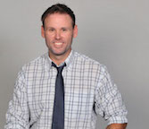

I am a dedicated and energetic professional, seeking a
career in information technology and programming.
I have experience in web development, graphic design, technology training, and teaching.
I can bring world domination to your organization.
- Degrees/Certifications
-
University of California - Davis
Major: Biology
Minor: Microbiology
Massachusetts Teaching Credential, Biology: 8-12
Moodle Course Creator Certified
Google Apps for Eduction Certified
AP Biology Summer Training, University of San Diego
- Teaching Experience
-
Technology Coach American School of Kuwait - 2014-2015
- Implemented and maintained standardized online classrooms for the middle school through the Moodle platform
- Trained and supported teachers as they implemented student based technology
- Facilitated a teacher lead professional learning course to become a Google Apps for Education certified teachers
- Designed and implemented online substitute teacher coordination system
- Designed and developed a website to streamline school facility and housing maintenance process
- Graphic Designer of school wide publications (Graduation publications, faculty and student handbook)
- Video editing experience with Final Cut Pro
- Experience and training with Gradequick and TeacherPlus
Computer Programming and Multimedia Teacher American School of Kuwait - 2014-2015
- Python, Scratch, and Java programing languages taught to students in grades 6-8
- Taught SketchUp and Photoshop graphic design programs to grades 6-8
- Implemented a mobile app curriculum to expand the programing class
- Fostered a classroom environment based on student inquiry and technology experimentation
- Organized and built the Community Center and multiple social events
AP Biology Teacher American School of Kuwait - 2012-2014
- Maintained a AP biology exam rate of 3 or better, significantly higher than the national average
- Integrated technology in formative assessments based on Google Apps for Education
- Presented a standards based grading seminar to school faculty to help build a collaborative learning environment
- Utilized Starboard technology as a pedagogical tool
AP Biology Teacher Escuela Internacíonal Sampedrana - Honduras - 2010-2012
- 90% rate of 3 or better on AP biology exam
- Presented at international teachers conference, Teachers Teaching Teachers
- Model United Nations director, organized 2nd largest MUN conference in the country
- Military Experience
-
Flying Crew Chief60th AMXS - Travis AFB, CA - 2000-2004
- Provided global mission support to C-5A/B/C aircraft through unscheduled maintenance and repair, pre and post flight inspections, safety inspections and servicing
- USAF Avionics Course, Keesler AFB, Biloxi, MS
- Secret Security Clearance issued by USAF-DOD
- Air Force Achievement Medal received Dec 2004 for direct contributions to successful global missions in support of Operations Iraqi Freedom and Enduring Freedom
- References
- Available on request